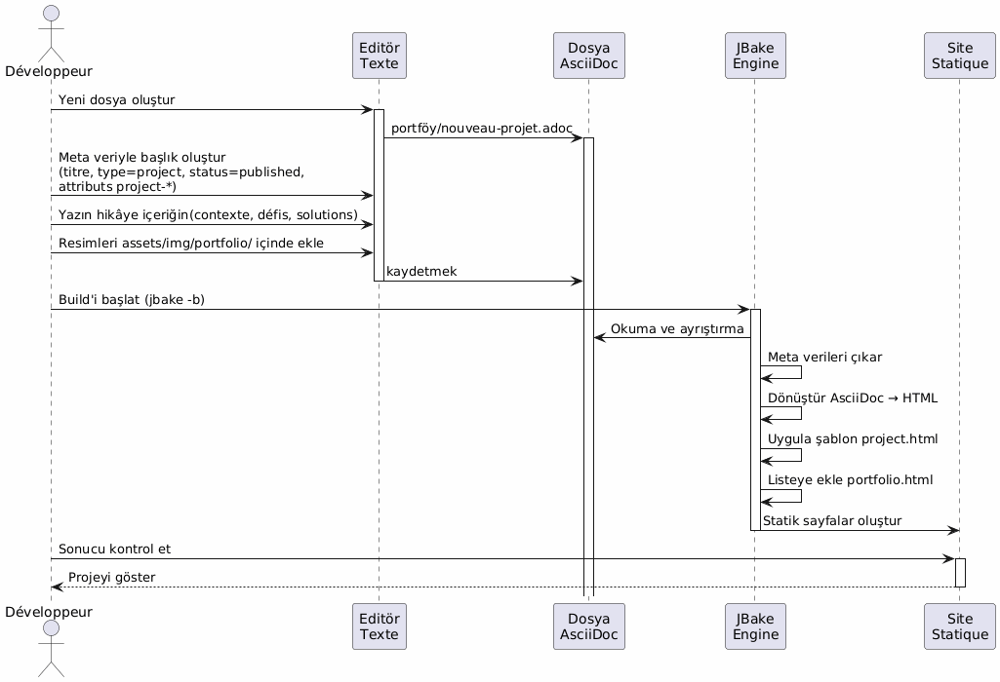
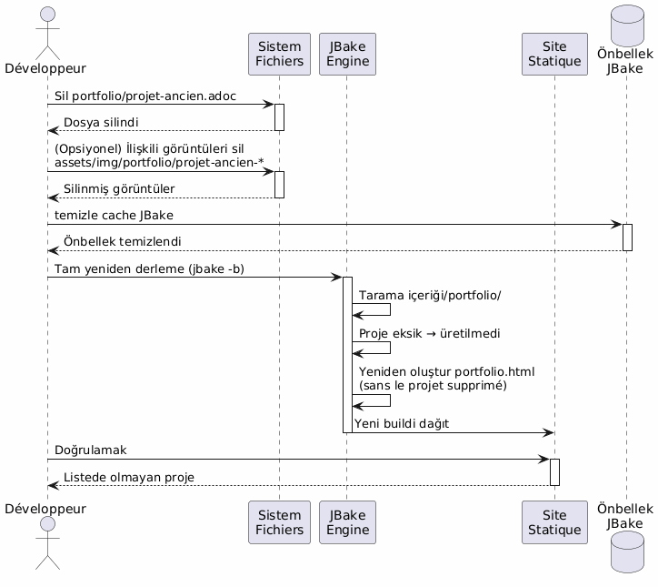
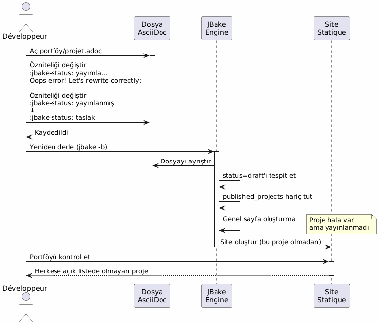
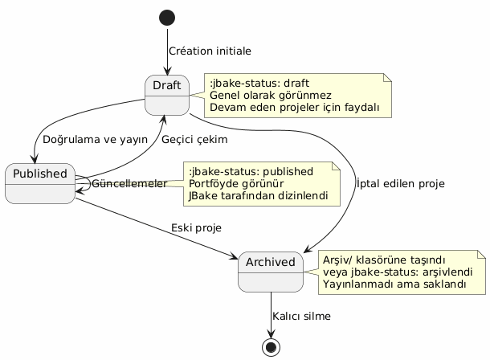
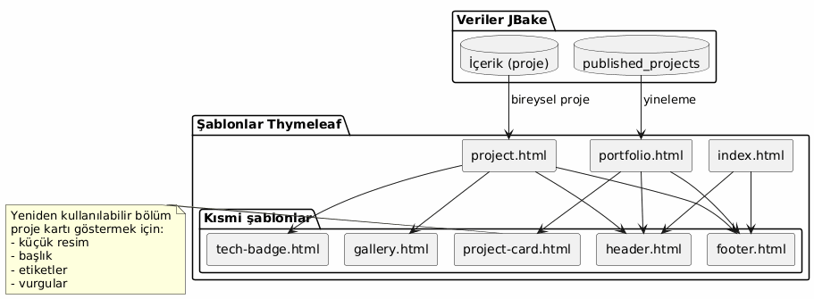
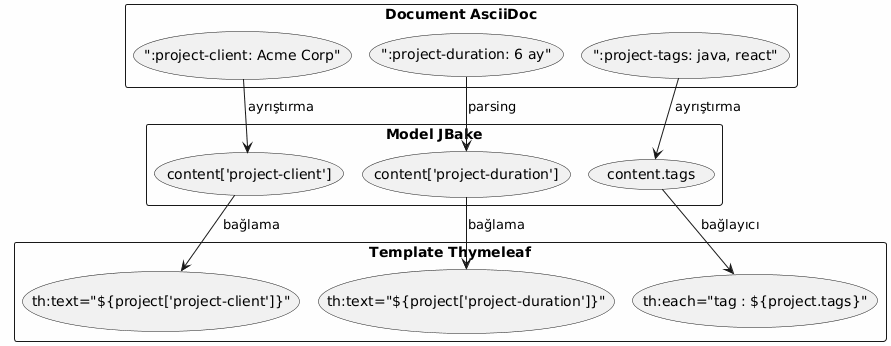
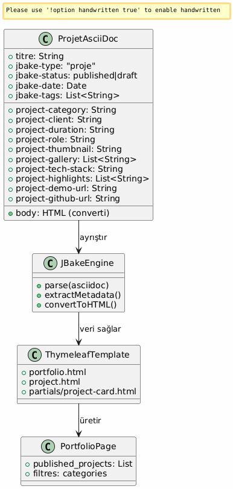
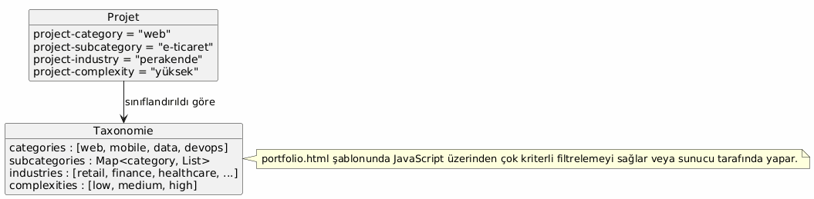

Mimari Portföy JBake – Vizyon ve Kullanım Senaryoları
Yayınlandı: 15 January 2026
Mimari Vizyon
Yönlendirici ilke
Mimari, İlgililiklerin Ayrılması ilkesine dayanır :
-
İçerik: zengin metaveri içeren yapılandırılmış AsciiDoc dosyaları
-
Sunum : Yeniden kullanılabilir Thymeleaf şablonları
-
Veri : JBake tarafından AsciiDoc özelliklerinden otomatik olarak çıkarılan model
-
Stil : Görsel tutarlılık için Bootstrap 5
Stratejik seçenek: Portföy için AsciiDoc
| kriter | Avantaj |
|---|---|
tutarlılık |
Blog gönderileriyle aynı format. |
Meta Veri |
Yapılandırılmış ve genişletilebilir öznitelikler ( |
Bakım yapılabilirlik |
Basit metin düzenleme, Git ile sürüm takibi |
Esneklik |
Tablolar, kod ve görselleri içerebilir |
Şablonlama |
JBake, Thymeleaf için öznitelikleri otomatik olarak çıkarır |
Veri modeli
Her portföy projesi bir AsciiDoc belgesi ile :
-
Üst bilgi meta verileri : yapılandırılmış bilgiler (müşteri, süre, teknolojiler, vb.)
-
Corps du document : hikâye tarzında açıklama, zorluklar, çözümler, sonuçlar
-
Özel nitelikler : önekli`project-*`otomatik ekstraksiyon için
Detaylı Kullanım Senaryoları
UC1 : Portfolioya bir öğe ekle
Nominal akış

Oluşturulacak dosya şablonu
Geliştirici oluşturur`content/portfolio/nom-projet.adoc`standart bir yapıyla :
-
Tüm gerekli niteliklerle başlık
-
Standartlaştırılmış bölümler (Bağlam, Zorluklar, Çözümler, Sonuçlar)
-
Tutarlı görüntü adlandırımı
Validasyon puanları
-
Zorunlu öznitelikler mevcuttur (
jbake-type,jbake-status,project-thumbnail) -
Referans gösterilen görüntüler içinde mevcuttur.
assets/img/portfolio/ -
JBake derlemesi hatasız olarak başarılır
-
Proje portföyo sayfasında gösterilir.
-
Proje ayrıntılı sayfası düzgün görüntüleniyor.
UC2 : Portföyden bir öğe silin
Nominal akış

Alternatif strateji: arşivleme
Temiz silmek yerine bir klasör oluşturmak mümkün.content/portfolio/archive/:
-
Dosyayı silmek yerine taşı.
-
Kolayca geri yüklemesini sağlar.
-
Git geçmişini daha açık tut
Kaynak temizliği
-
Öksüz görüntüler kontrol et`assets/img/portfolio/`
-
Başka projeler tarafından referans gösterilmemiş görüntüleri sil
-
JBake önbelleğini temizleyerek hayalet referanslardan kaçının.
UC3 : Taslak haline getir
Nominal akış

Olası durumlar

Tipik kullanım durumları
-
Yazım aşamasında olan proje: taslak olarak oluştur, hazır olduğunda yayınla
-
Geçici olarak gizli proje : müşteri anlaşması olana kadar taslak duruma geçmek
-
Büyük Güncelleme : drafta geçmek, düzenlemek, tekrar yayınlamak
-
A/B testing : drafte kopyala, test et, en iyi versiyonu yayınla
Şablonlama Mimarisi
Tekrar kullanılabilir şablonlar stratejisi

Veri çıkarma deseni
JBake, AsciiDoc özelliklerini otomatik olarak Thymeleaf içinde erişilebilir olan özelliklere dönüştürür :

İsimlendirme kuralları
-
Proje Özellikleri : önek`project-*` (ex:
project-client,project-tech-stack) -
Dosyalar : kebab-case (örnek:`ecommerce-platform.adoc`)
-
Görüntüler : önek isim-proje (örn:`ecommerce-platform-thumb.jpg`)
-
Templates : işlevsel ad (örnek:`project-card.html`,
tech-badge.html)
Yayın İş Akışı
Geliştirme hattı

ortamlar
| Ortam | Kullanım | Kabul edilen statü |
|---|---|---|
Yerel |
Geliştirme ve önizleme |
taslak, yayınlanmış |
Aşama |
Üretim öncesi doğrulama |
sadece yayınlandı |
Üretim |
Kamu sitesi |
Sadece yayınlanmış |
Genişletilebilirlik
Yeni özellikler ekleme
Veri modelini zenginleştirmek için sadece yeni önekli özellikler ekleyin.project-*(empty)
-
project-awards: Ödüller ve takdirler -
`project-testimonial`Müşteri alıntısı
-
`project-team-size`Ekip boyutu
-
`project-budget-range`Bütçe aralığı
Bu özellikler, JBake motoru değiştirilmeden şablonlarda otomatik olarak mevcut olur.
Gelişmiş kategorizasyon

İyi Uygulamalar
Dosya Organizasyonu
-
Bir dosya = bir proje : Birden fazla projeyi karıştırma
-
Özel klasöründeki resimler
assets/img/portfolio/nom-projet/ -
Tutarlı adlandırmalar : araştırma ve bakımı kolaylaştırır
-
Versioning Git : Değişikliklerin tam takibi
İçerik yönetimi
-
Varsayılan taslak durumu : sadece hazır olduğunda yayınla
-
Yayın öncesi inceleme : Kalite ve Gizlilik Doğrulama
-
Tam Meta Veriler : İlgili tüm alanları doldurun
-
Zengin anlatıcı içerik : metavermelerle sınırlı kalmayın
Performans
-
Görselleri optimize et : commit öncesi sıkıştırma
-
Pagination si gerekli : >20 proje
-
Lazy loading : Galeri görselleri talep üzerine yüklenir
-
Tarayıcı önbelleği : varlıklar için uygun başlıklar
Sonuç
Bu mimari şuna izin verir:
-
Kullanım Kolaylığı : bir proje eklemek = bir metin dosyası oluşturmak
-
Esneklik : yeni nitelikler aracılığıyla genişletilebilir
-
Bakım kolaylığı : içerik/sunum ayrımı
-
izlenebilirlik : tam Git versiyonlama
-
Otomasyon : derleme ve sürekli dağıtım mümkün
AsciiDoc seçimi, sitenin geri kısmıyla tutarlılığı sağlarken, profesyonel bir portföy için gerekli meta verilerin zenginliğini de sunar.